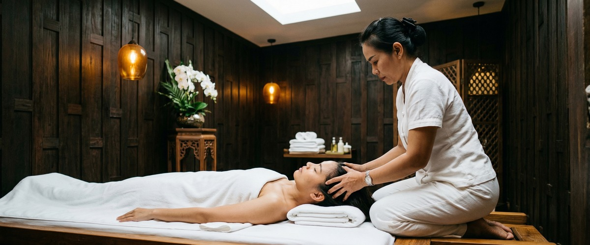
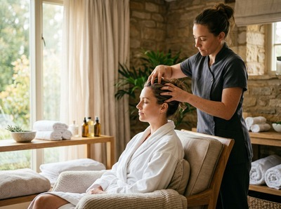

If you're living with regular headaches or migraines, you know how completely they can derail your day.

The throbbing, the pressure, the sensitivity to light and sound, the hours written off waiting for it to pass. Thai massage for headaches and migraines offers a drug-free approach backed by clinical research. It reduces both how often attacks happen and how severe they are — by addressing the muscle tension and nervous system issues at the root of many headache disorders.
Migraine is a neurological disorder that causes moderate-to-severe recurring headaches. It is one of the most common and disabling conditions in the world. It typically causes throbbing pain on one side of the head, along with nausea and sensitivity to light and sound. Attacks can last anywhere from four to 72 hours.

Tension-type headaches are the most common kind. They feel different: a steady, band-like pressure across both sides of the head, often spreading into the neck and shoulders. Both types are frequently triggered by muscle tension, poor posture, stress, and broken sleep. That means the body itself is often driving every episode.
The link between neck and shoulder tension and headache onset is well established. A published study in the Journal of Alternative and Complementary Medicine found that Thai traditional massage cut headache intensity in patients with chronic tension-type and migraine headaches. Benefits were still present at three and nine weeks of follow-up. The same research showed a clear rise in pressure pain threshold — in plain terms, the nervous system became less sensitive to pain.
Thai massage uses acupressure, assisted stretching, and rhythmic compression. This releases deep tension in the upper back, neck, and scalp. It also improves blood flow to the head and activates the body's rest state. That shift pulls the body out of the stress response that so often comes before a migraine.
A separate PMC study found that headache-free days increased by an average of one day per week during massage treatment. Peak intensity also dropped by 30%. Thai oil massage and aromatherapy massage can extend these results. The slow, flowing strokes of an oil massage deepen muscle relaxation across the upper body. Certain essential oils — including lavender and peppermint — have research behind them for headache relief. Swedish massage is another option, offering gentle full-body relaxation that eases the wider tension behind recurring episodes.
At Serendipity Massage Therapy & Wellness on Hope Street in Glasgow City Centre, sessions targeting headaches and migraines begin with a brief consultation. Your therapist will want to understand your pattern: how often your headaches occur, where the tension sits, and what tends to come before an attack. This shapes the entire session. You can book your session online before you arrive.
Your therapist will focus on the neck, shoulders, upper back, and scalp. They will use acupressure and assisted stretching techniques developed by head therapist Jariya Malone. These target the deep postural tension that feeds headache cycles.
Many clients notice a clear easing of head pressure during or straight after their first session. The goal is not just relief today, but fewer and less severe episodes over time through regular treatment.
People who gain the most from massage for headaches tend to be office workers who spend long hours at a screen. This includes many working around Glasgow's financial district, where posture is under strain throughout the week. Frequent tension headache sufferers, those whose migraines are stress-triggered, and people with neck and upper back tightness are all strong candidates.
Anyone relying on over-the-counter painkillers as their main fix is also worth mentioning. If headaches are disrupting your sleep, your work, or your weekends, book a treatment at Serendipity and give your body a more effective way to reset.
Research suggests it can. A clinical study found that regular massage therapy increased headache-free days and reduced peak pain intensity in chronic headache sufferers. Massage targets muscle tension and nervous system imbalance — both known factors in recurring migraines. Consistent sessions tend to produce better long-term results than occasional one-off treatments.
Most therapists advise against a full-body massage at the height of an active migraine. Stimulation can make sensitivity to touch and sound worse. Gentle scalp or head massage may bring some relief during a mild episode. The stronger evidence supports massage as a way to prevent attacks between episodes, rather than as a remedy during one.
Traditional Thai massage has the strongest research behind it for reducing headache intensity and frequency. The acupressure and neck-focused techniques address the root causes of tension headaches well. Thai oil massage and aromatherapy massage add useful relaxation effects. Swedish massage is a good option for those who prefer lighter pressure or a gentler introduction.
Many clients notice reduced muscle tension and some headache relief after the first session. Meaningful drops in frequency tend to emerge over three to six sessions, especially for those with chronic tension headaches. The research on Thai massage showed lasting benefits at three and nine weeks post-treatment. Regular sessions build on each other over time.
Yes, and the evidence for tension headaches is strong. Tension-type headaches are closely linked to muscle holding in the neck, shoulders, and upper back — areas that massage directly addresses. A pilot study on PubMed found a 30% drop in peak headache intensity after massage therapy in tension headache patients. Both types respond well to regular treatment.
Yes, and your therapist at Serendipity will ask about it during the consultation before your session begins. Knowing your headache pattern, typical trigger points, and whether you have a current or recent episode helps your therapist adjust pressure, technique, and focus areas. This is how sessions are shaped to you, rather than following a fixed script.